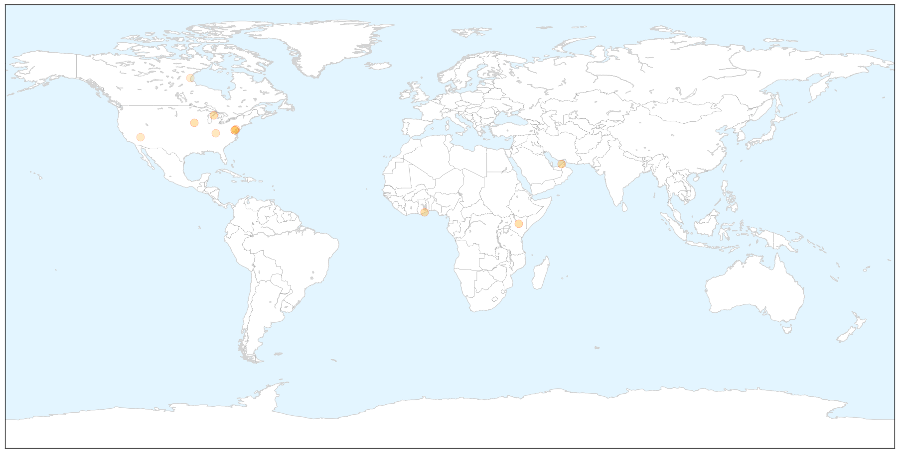
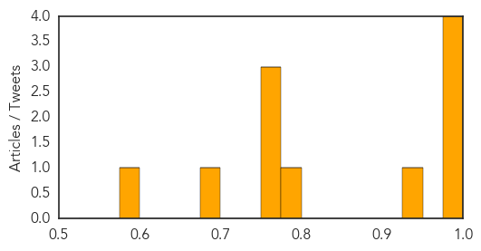
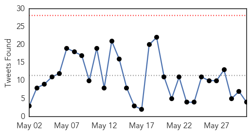
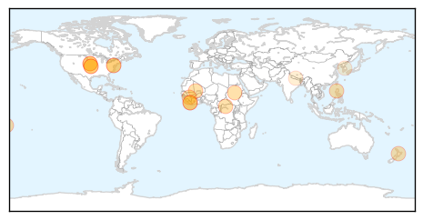

Influenza
30-Day Web Trend
0 alerts, 0 warnings

30-Day Twitter Trend
0 alerts, 0 warnings

Article Locations

X

Article Confidences
Top Articles:
- 0.997
- CDC calls for calm as suspected MERS case tests negative
- 0.992
- Top 5 most disturbing vaccine facts
- 0.977
- H3N2 canine influenza confirmed in Michigan
- 0.977
- Don’t consume sick birds, public advised
- 0.933
- Avian Flu Threatening U.S. Eggs Supply
- 0.778
- Egg Shortages and Rising Prices a Result of Avian Influenza?
- 0.751
- May 31, 2015 Archives
- 0.751
- May 30, 2015 Archives
- 0.751
- May 30, 2015 Archives
- 0.681
- Nevada ranks dead last in health spending
- 0.593
- Poultry farmers keep eye on bird flu
Top Tweets:
-
No tweets found for May 31, 2015
Ebola
30-Day Web Trend
0 alerts, 3 warnings

30-Day Twitter Trend
0 alerts, 0 warnings

Article Locations

Article Confidences

Top Articles:
- 1.000
- University Of Kansas Hospital Monitors Possible Ebola Patient
- 0.999
- University of Kansas Hospital monitoring Patient for Possible Ebola Infection
- 0.998
- Ebola crisis isn’t over…
- 0.997
- Kansas patient tests negative for Ebola after Sierra Leone trip
- 0.992
- New Jersey on alert for Lassa fever
- 0.991
- ‘We Are not Planning to Evacuate Our Citizens’
- 0.990
- Ebola will strike again, warns expert scientist - ‘Epidemic will return, we need to be prepared’ - Kuwait Times
- 0.989
- Patient with fever, recently returned from West Africa, admitted to Johns Hopkins Hospital
- 0.986
- Hospital: KC-area man tests negative for Ebola virus
- 0.980
- Ebola fear for Samoa peacekeepers based in Afrika quashed
- 0.980
- Dangote Foundation Commits N906M To Wipe Out Ebola From Africa
- 0.977
- Traditional Practice Hampers Ebola Fight In Sierra Leone
- 0.946
- Treating ebola - a story of hope and death
- 0.919
- Kansas City-area man tests negative for Ebola after Sierra Leone
- 0.827
- Person develops fever after returning from West Africa
- 0.546
- Two years after its acquisition by L+M, Westerly Hospital is making a full recovery
- 0.522
- Inside America’s secretive biolabs
- 0.513
- Virtual Reality Film Gives Viewers Nepal Quake Experience
Top Tweets:
- 0.849
- A Conversation With Lusu Sloan: 'Over 400 Market Women Died From Ebola in ... - Ebola Deeply http://t.co/XopmR6ovuu ebola EVD
- 0.749
- UPDATE: KU Hospital says Kansas City patient tests negative for Ebola - KSHB http://t.co/gY4LH5iniE ebola EVD
- 0.674
- Ebola crisis: The tree thought to be the source of outbreak - BBC News http://t.co/1XCQPmhJeA ebola EVD
- 0.628
- Columbus Public Health still spends time money on Ebola monitoring - Columbus Dispatch http://t.co/lKtHetSq4w ebola EVD